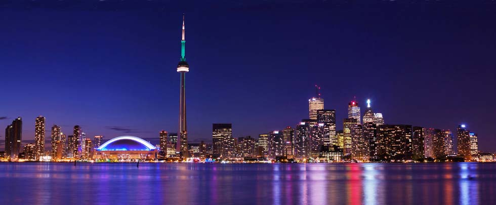
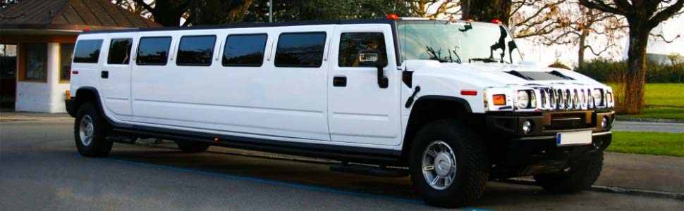
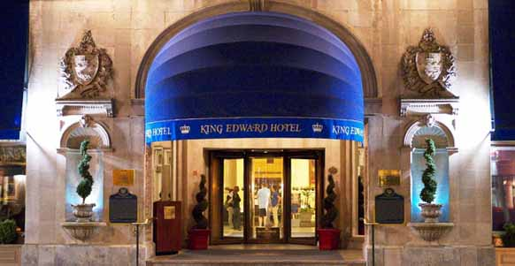
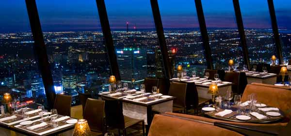
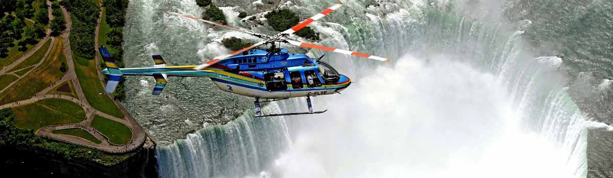
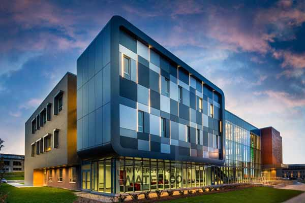
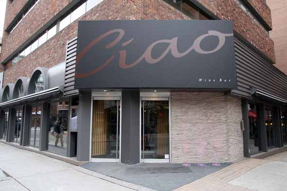
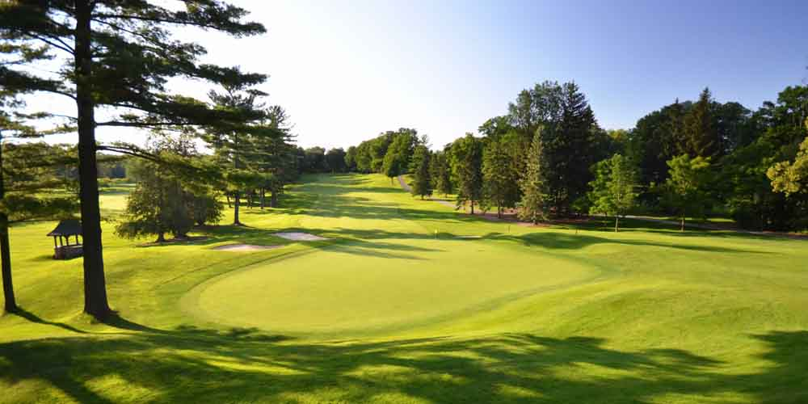

Global Golf Tour
Day One
Toronto
Toronto, the capital city of Ontario, is also the largest city in Canada, the fourth largest city in North America. Toronto is not only the center of Canadian culture and economy, but also the traffic hub city and the country's most manufacturing city. Since the crime rate is quite low and environment is pleasant, Toronto is considered as one of the world's most livable cities. Toronto's educational resources are also very rich. It has been a dream of many Chinese students to study abroad. The city has the famous University of Toronto, York University, Ryerson University, and Seneca College; nearby has University of Waterloo, Queen's University, and University of Western Ontario. Meanwhile, Toronto is a multicultural city. The Chinese culture is everywhere. In the other side of Toronto city, it is the state of New York of United States. The world-famous Niagara Falls is also only 100 kilometers away from the city of Toronto.
-
13:55
Depart from Beijing International Airport at 13:55 by Hainan Airlines 7975 (Specific flight will be noted due to group)
-
15:20
Arrive at Toronto Pearson Airport at 15:20 (local time). The trip is 13 hours.
-
Each passenger will be distributed an international long-distance phone cards which can call their family and keep in touch with them during the trip in the next eight days.
-
Pick-up service will be arranged by luxury Hummer down to beautiful downtown Toronto and stay in downtown Omni King Edward Hotel.

-
A welcome banquet dinner will be held at Omni King Edward Hotel (Toronto political celebrities attend)
Day Two
-
Breakfast in Omni King Edward Hotel.
-
10:00
play golf at St. George's Golf Course. During the game, there will be famous Canadian Golf coach teaching and guiding with players. Lunch break has champagne or white wine. Customers who do not play golf will go to Toronto Yorkdale Shopping center and get the equivalent cost back.

-
Lunch served with snacks.
-
15:00
End playing, changing and shower
-
16:00
return to downtown Toronto hotel for a short break.
-
18:30
Dinner at the world-famous CN Tower revolving restaurant, enjoy the food while overlooking the spectacular views of the city center.

Etobicoke St. George Golf Club
St. George’s Golf and Country Club is ranked No. 30 of the World's 100 Greatest Golf Courses in 2014, No. 10 in the world outside the United States and No. 1 in Canada by Golf Digest magazine. St. George's was also ranked No. 1 by Golfweek magazines in 2012 and one of the 100 Platinum Clubs of the World in 2013. Recently the course was ranked in the top 100 courses in the world by Golf Magazine and Golf Course Architecture. Designed by legendary Canadian golf course architect Stanley Thompson in 1929 the course has truly stood the test of time. It continues to receive much praise for its traditional design and most notably its four outstanding finishing holes, according to PGA Tour players, while hosting the 2010 RBC Canadian Open.

Day Three
-
Breakfast in Omni King Edward Hotel.
-
10:00
play golf at Hamilton Golf Course. During the game, there will be famous Canadian Golf coach teaching and guiding with players. Customers who do not play golf will go to Niagara Outlets shopping center and get the equivalent cost back.
-
Lunch served with snacks
-
15:00
End playing, changing and shower
-
16:00
 Go to the world famous Niagara Falls, and stay in Fallsview Casino Resort Casino hotel. Hotel rooms directly face to the magnificent view of the waterfall.
Go to the world famous Niagara Falls, and stay in Fallsview Casino Resort Casino hotel. Hotel rooms directly face to the magnificent view of the waterfall. -
18:30
casino hotel dinner. Free time after dinner.
Hamilton Golf & Country Club
With 18 holes designed by Harry Shapland Colt, the iconic British designer noted for creating many of the best golf courses in the world, and another nine created by famed Canadian architect Robbie Robinson, Hamilton has been long considered among the best in Canada, and currently is in Golf Digest's Top 100 courses in the world. With a historic and updated clubhouse, world-class practice facilities and a short course modeled on Colt's best designs, Hamilton offers a private golf club experience with few rivals.

Day Four
-
Breakfast at Fallsview Casino Resort Hotel
-
11:00
Go to Niagara Falls for boat, shooting photos, low-flying helicopter tours

-
Lunch is in Niagara Falls nearby restaurants
-
 A trip to town of Niagara-On-The-Lake and enjoy the charming of this small town
A trip to town of Niagara-On-The-Lake and enjoy the charming of this small town -
Dinner at a local winery nobility, and including the introduction of local red wine and ice wine culture, customs and manners of the aristocracy.
Niagara Falls
Niagara Falls is located in the Great Lakes region by three on the Niagara River Falls, collectively, the average flow of 2,407 cubic meters / second, and Iguassu Falls, Victoria Falls and called the world's three largest transnational waterfall. Niagara Falls is famous for the beautiful scenery, a huge hydroelectric power and challenging environmental engineering. Niagara River connects Lake Erie and Lake Ontario and separates New York State and Ontario. The river falls into the cliff 350 meters wide when passing through the United States Goat Island, and is divided into two waterfalls. Niagara Falls is a very popular attraction for tourists.

Day Five
-
Breakfast at Fallsview Casino Resort Hotel
-
9:00
Play golf at WestMount Golf Course. During the game, there will be famous Canadian Golf coach teaching and guiding with players. Customers who do not play golf will go to Niagara Outlets shopping center and get the equivalent cost back.
-
Lunch served with snacks
-
14:30
End playing, changing and shower
-
15:30
Visit the famous University of Waterloo and McMaster University.
-
18:00
Return to downtown Toronto and stay in Four Season Hotel. Dinner at the famous Italian restaurant Ciao.
Kitchener West Mount Golf Club
Westmount Golf and Country Club opened its greens to members in the summer of 1931. It is one of Canada’s premier golf facilities, consistently ranking in the top 15 over the last several years. It ranked #12 on the SCOREGolf Top 100 Courses in Canada - 2014. Designed by renowned golf course architect, Stanley Thompson, Westmount boasts a beautifully maintained, championship level 18-hole golf course complete with a fully stocked and operational pro shop, electric golf carts, caddies and a friendly, professional staff.
Day Six
-
Breakfast at Four Season Hotel
-
9:00
Play golf at Woodbridge Golf Course. During the game, there will be famous Canadian Golf coach teaching and guiding with players. Customers who do not play golf will go to Vaughan Mills Outlets shopping center and get the equivalent cost back.

-
Lunch served with snacks and Mystery guest distributing prizes
-
15:00
End playing, celebrating with Champaign. Then changing and shower
-
17:00
 Return to Richmond Hill Diaoyutai Restaurant for dinner. Participating with local political and business celebrities.
Return to Richmond Hill Diaoyutai Restaurant for dinner. Participating with local political and business celebrities.
Woodbridge Golf and Country Club
Established in 1924 hidden among the grape vineyards and cherry orchards of the San Joaquin Valley, Woodbridge Golf & Country Club features a 27-hole champion golf course, a modern clubhouse with casual and formal dining, a tennis facility with 7 tennis courts, and a full size swimming pool. Our main goal is to provide a memorable private club experience for our members and their guests.

Day Seven
-
Breakfast in hotel.
-
 After breakfast, guided tour of downtown Toronto, including University of Toronto, the world-famous classical Casa Loma, the historical Chinatown, one of the Five Great Lakes in North America, Lake Ontario boating, and Bloor Street shopping.
After breakfast, guided tour of downtown Toronto, including University of Toronto, the world-famous classical Casa Loma, the historical Chinatown, one of the Five Great Lakes in North America, Lake Ontario boating, and Bloor Street shopping. -
Dinner in downtown Japanese izakaya
-
Return to hotel and arrange one to one service to answer questions related to Canadian immigration, study abroad, investments, and real estate during the nine days’ trip.
Toronto Downtown
University of Toronto: Located in downtown Toronto, and the Ontario government and parliament around the Queen's Park around the city center. The University of Toronto is one of the only two members of the American Association of Universities outside United States. In 2014, University of Toronto ranked 14th in the world and ranked 1st in Canada.
Casa Loma Castle: built in 1914 with 98 rooms, was the largest private residence in Canada. It was designed by renowned Canadian architect Edward Lannuo Si and built by Sir Perrett Unfortunately, a jazz Perrett only lived in it for 11 years, was forced to sell it. In 1937, the Kiwanis Club and rented it to develop into a tourist attraction.
Ontario Lake: it is the world's fourteenth great lake. It located in the eastern part of North America, the junction of United States and Canada, north of Ontario, Niagara Peninsula and the southern border of New York State. It is one of the five largest freshwater lakes in North America, and is the world's largest group of freshwater lakes.

Day eight & Day Nine
-

-
17:15
Depart from Toronto Pearson Airport by Hainan Airline 7976
-
18:40
Arrive at Beijing International Airport. The trip is 13 hours 25 minutes.
-
Economy Class: CAD $14888
-
Business Class: CAD $18888